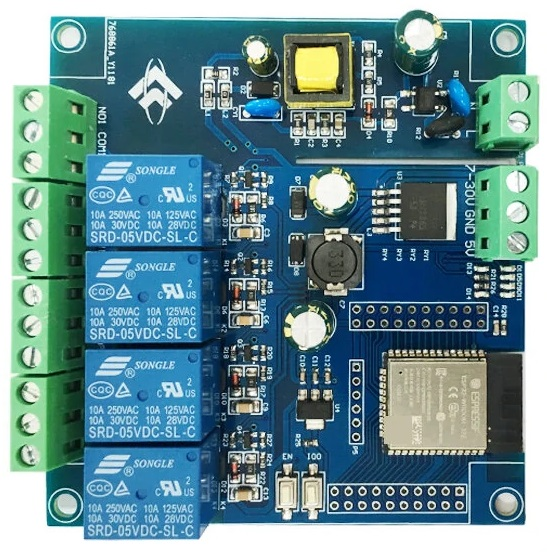

Flower of the Week
ESP32-DevKitM-1 is a ESP32-MINI-1-based development board produced by Espressif. Most of the I/O pins are broken out to the pin headers on both sides for easy interfacing. Developers can either connect peripherals with jumper wires or mount ESP32-DevKitM-1 on a breadboard.
ESP32-DevKitC is an entry-level development board. It has all the ESP32 pins exposed and is easy to connect and use.
ESP32-PICO-KIT is Espressif's smallest development board, as it fits into a mini breadboard. It is fully functional with the minimum number of discrete components, while it has all the ESP32 pins exposed.